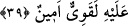
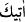
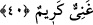

Süleyman (a.s.): “Çocuk senin. Allah size cezâ olarak çocuğun yüzünü siyahlaştırdı.”
dedi. İşte bu ihtisas (Allah’ın özel olarak vermesi) babındandır.
39. Cinlerden bir ifrit: “Sen makamından kalkmadan ben onu sana getiririm.
Gerçekten bu işe gücüm yeter ve bana güvenebilirsiniz” dedi.
“Cinlerden” azgın ve habîs “bir ifrit:”
Habîs, hoşlanılmayan ve akranlarını kendinden uzaklaştıran kimseye “ifrit” denir. el-
Müfredât’ta der ki: “Cinlerden olan ifrit” azgın ve habîs olandır. Bu kelime, şeytan
kelimesi gibi istiâre yoluyla insan için de kullanılır.”
Bu ifritin ismi Zekvân idi. Fethu’r-Rahmân’da der ki: “O, cinlerin efendisi Kûzâ
veya Sahrâ’dır. Daha önce Süleyman (a.s.)’a başkaldırırdı. İran’daki Istahr şehri ona
nisbet edilir. Dağ gibi iri cüsseli olup ayağını gözünün ulaştığı yere atardı.
“Sen makamından” hükûmet/idâre meclisinden “kalkmadan ben onu” yâni Belkıs’ın
arşını “sana getiririm.” Süleyman (a.s.) gün ortasına kadar orada otururdu. “
” ya
muzârî sıygasıdır ki mânâsı, “sana getiririm” olur. Ya da ism-i fâildir ki “sana
getiriciyim” demektir. Burada mutlaka getirme iddiâsı olduğu için ism-i fâil olması daha
münâsib ve isim cümlesine atfedildiği için daha uygundur. Yani, ben mutlaka bu süre
zarfında onu getiriciyim, demektir.
“Gerçekten bu işe” onu getirmeye “gücüm yeter” onu taşımak bana ağır gelmez “ve”
içindeki
mücevherleri
ve
kıymetli
eşyaları
muhâfaza
konusunda
“bana
güvenebilirsiniz.” Onları asla başkasıyla değiştirmem. “dedi.”
40. Kitaptan (Allah tarafından verilmiş) bir ilmi olan kimse ise: “Gözünü açıp
kapamadan ben onu sana getiririm.” dedi. (Süleyman) onu (melikenin tahtını) yanı
başına yerleşmiş olarak görünce: “Bu, şükür mü edeceğim, yoksa nankörlük mü
edeceğim diye beni sınamak üzere Rabbimin (gösterdiği) lütfundandır. Şükreden
ancak kendisi için şükretmiş olur, nankörlük edene gelince, o bilsin ki, Rabbimin
hiçbir şeye ihtiyacı yoktur, çok kerem sâhibidir.” dedi.